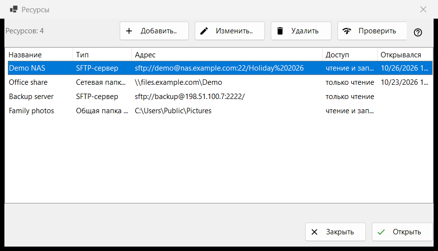
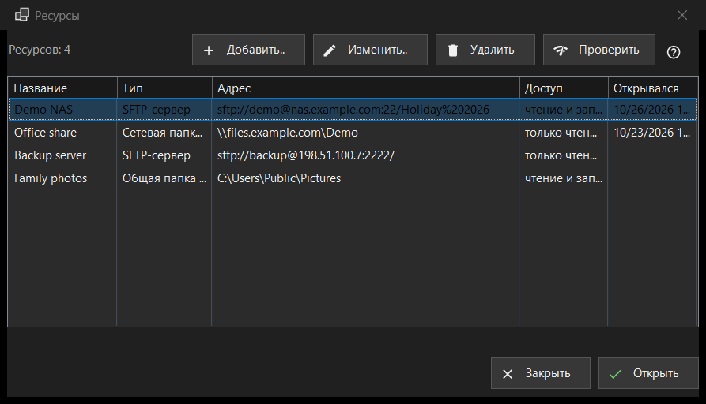

Ресурсы
Назначение
Список серверов и сетевых папок, которые умеет открывать просмотрщик: SFTP-серверы, сетевые папки Windows (SMB) и папки, которые Share Manager раздаёт с этого компьютера. Окно открывается пунктом «Управление ресурсами..» в меню папки; тот же список есть на странице «Сервер и ресурсы» окна настроек.


Порядок действий
- Нажмите «Добавить..» и заполните данные сервера либо загрузите готовый файл настроек через кнопку «Ещё».
- Выберите новую строку и нажмите «Проверить».
- Нажмите «Открыть» или дважды щёлкните строку: просмотрщик подключится и покажет папку сервера.
- «Изменить..» меняет адрес или пароль, «Удалить» убирает ресурс из списка.
Элементы окна
Список
Столбцы: «Название», «Тип», «Адрес», «Доступ» и «Открывался». В столбце «Тип» бывает «SFTP-сервер», «Сетевая папка (SMB)» или «Общая папка (Share Manager)», в столбце «Доступ» - «только чтение» или «чтение и запись». Под списком показано число ресурсов; если ресурсов нет, окно показывает подсказку и кнопку «Добавить..». «Изменить..», «Удалить» и «Проверить» (а в окне «Ресурсы» ещё и «Открыть» в нижней строке) работают только при выбранной строке; пока её нет, подсказка на кнопке говорит: «Сначала выберите ресурс в списке».
Добавить.. и Изменить..
«Добавить..» открывает форму нового ресурса, «Изменить..» - форму выбранного. Введённый там пароль хранится в зашифрованном виде для вашей учётной записи Windows, а не в самом списке.
Удалить
«Удалить» сначала спрашивает; ответ по умолчанию «Нет». Вопрос называет ресурс, предупреждает, что сохранённый для него пароль тоже будет удалён, и напоминает, что файлы на сервере не затрагиваются.
Проверить
«Проверить» проверяет выбранную строку, не открывая её. Для SFTP-сервера опрашиваются все известные адреса ресурса, и для каждого сообщается «хост:порт» и вердикт: один живой ответ SSH - успех, открытый порт без SSH - предупреждение, молчание - сбой. Пароль не отправляется. Для сетевой папки программа открывает ресурс с сохранённым паролем и читает верхнюю папку; если пароль не сохранён, она просит ввести его через «Изменить..». Для строки Share Manager проверяется только, есть ли папка на этом компьютере.
Открыть
«Открыть» или двойной щелчок по строке передаёт ресурс просмотрщику: он подключается и показывает его папку. Если пароль не сохранён или сохранённый не подошёл, сначала появляется небольшое окно с запросом пароля.